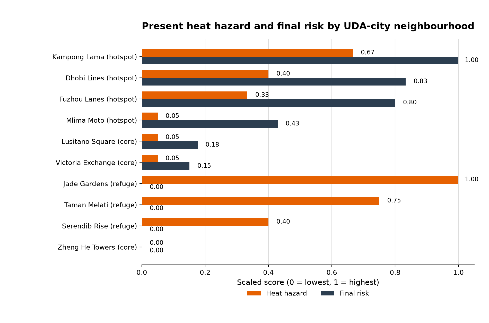
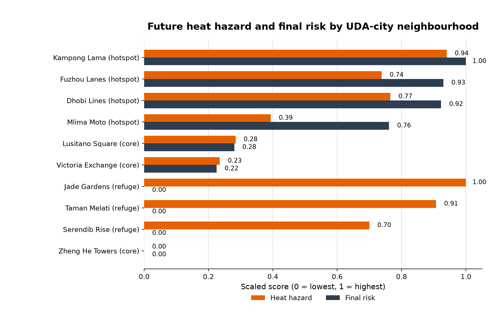
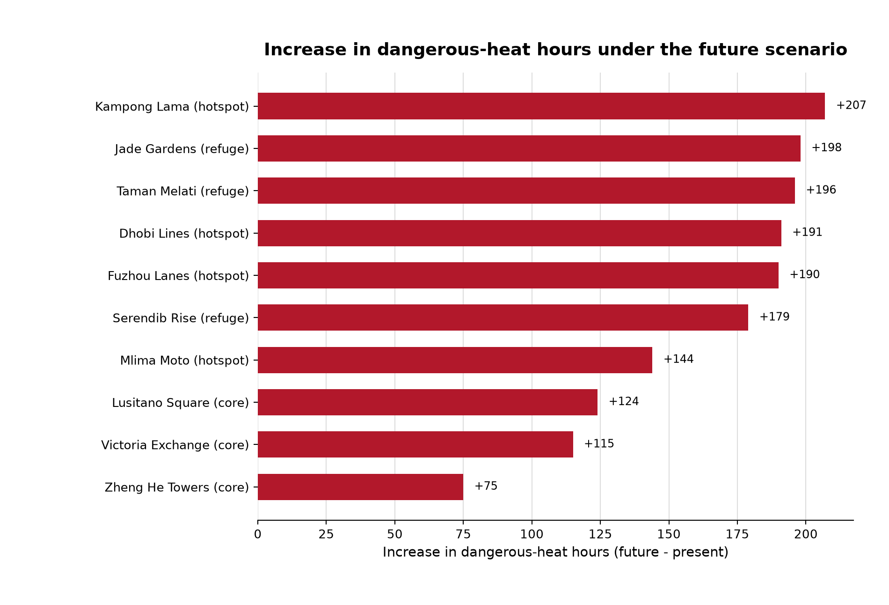

Highest Heat Hazard
Jade Gardens62 dangerous-heat hours.
A clear present-versus-future summary of SUEWS modelled heat hazard, population exposure, vulnerability, and final heat-risk priorities across the 10 UDA-city neighbourhoods.
The future +2.5 C pseudo-warming scenario increases dangerous-heat hours across every neighbourhood. However, the highest physical heat hazard is not always the highest final heat risk because risk also depends on exposure and vulnerability.
Main interpretation: planning should not be based on heat hazard alone. The priority areas are where heat hazard overlaps with high population exposure and social vulnerability.
In the present hot-humid scenario, Jade Gardens records the most dangerous-heat hours, while Kampong Lama has the highest final risk. This is the first heat hazard-risk paradox in the analysis.
62 dangerous-heat hours.
Risk index = 1.000.
Population exposure changes the final priority ranking.

In the future +2.5 C pseudo-warming scenario, dangerous-heat hours increase sharply. Kampong Lama remains the highest final-risk neighbourhood, while Jade Gardens remains the highest physical hazard.
260 dangerous-heat hours.
Risk index = 1.000.
Both remain very high-risk hotspot neighbourhoods.

The future scenario increases dangerous-heat hours everywhere. The largest increase occurs in Kampong Lama, followed by Jade Gardens and Taman Melati. Final risk rankings change less than heat hazard because exposure and vulnerability are held constant in this comparison.

+207 dangerous-heat hours.
Fuzhou Lanes moves from rank 3 to rank 2.
High hazard does not become high final risk because exposure remains low.
| Grid | Neighbourhood | Type | Present heat hours | Future heat hours | Increase | Present risk | Future risk | Risk change | Present rank | Future rank |
|---|---|---|---|---|---|---|---|---|---|---|
| 4 | Kampong Lama | hotspot | 42 | 249 | +207 | 1.000 | 1.000 | +0.000 | 1 | 1 |
| 9 | Fuzhou Lanes | hotspot | 22 | 212 | +190 | 0.800 | 0.930 | +0.130 | 3 | 2 |
| 5 | Dhobi Lines | hotspot | 26 | 217 | +191 | 0.833 | 0.923 | +0.089 | 2 | 3 |
| 7 | Mlima Moto | hotspot | 5 | 149 | +144 | 0.429 | 0.761 | +0.332 | 4 | 4 |
| 6 | Lusitano Square | core | 5 | 129 | +124 | 0.176 | 0.280 | +0.104 | 5 | 5 |
| 8 | Victoria Exchange | core | 5 | 120 | +115 | 0.151 | 0.225 | +0.074 | 6 | 6 |
| 1 | Jade Gardens | refuge | 62 | 260 | +198 | 0.000 | 0.000 | +0.000 | 7 | 7 |
| 3 | Taman Melati | refuge | 47 | 243 | +196 | 0.000 | 0.000 | +0.000 | 7 | 7 |
| 2 | Serendib Rise | refuge | 26 | 205 | +179 | 0.000 | 0.000 | +0.000 | 7 | 7 |
| 10 | Zheng He Towers | core | 2 | 77 | +75 | 0.000 | 0.000 | +0.000 | 7 | 7 |